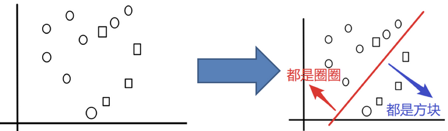

Infi-chu:
http://www.cnblogs.com/Infi-chu/
一、集成学习简介
集成学习通过建立几个模型来解决单一预测问题。它的工作原理是生成多个分类器/模型，各自独立地学习和作出预测。这些预测最后结合成组合预测，因此优于任何一个单分类的做出预测。
【注】
只要单分类器的表现不太差，集成学习的结果总是要好于单分类器
二、Bagging
1.Bagging集成原理
目标：把下面的圈和方块进行分类

实现过程：
1）采样不同数据集
2）训练分类器
3）平权投票
4）实现过程总结
2.随机森林构造过程
在机器学习中，随机森林是一个包含多个决策树的分类器，并且其输出的类别是由个别树输出的类别的众数而定。
随机森林 = Bagging + 决策树
例如, 如果你训练了5个树, 其中有4个树的结果是True, 1个树的结果是False, 那么最终投票结果就是True
随机森林够造过程中的关键步骤（用N来表示训练用例（样本）的个数，M表示特征数目）：
1）一次随机选出一个样本，有放回的抽样，重复N次（有可能出现重复的样本）
2） 随机去选出m个特征, m <<M，建立决策树
思考
1.为什么要随机抽样训练集？
如果不进行随机抽样，每棵树的训练集都一样，那么最终训练出的树分类结果也是完全一样的
2.为什么要有放回地抽样？
如果不是有放回的抽样，那么每棵树的训练样本都是不同的，都是没有交集的，这样每棵树都是“有偏的”，都是绝对“片面的”（当然这样说可能不对），也就是说每棵树训练出来都是有很大的差异的；而随机森林最后分类取决于多棵树（弱分类器）的投票表决。
3.API
max_features=sqrt(n_features).max_features=sqrt(n_features)(same as "auto").max_features=log2(n_features).max_features=n_features.4.eg
# 实例化随机森林
# 随机森林去进行预测
rf = RandomForestClassifier()
# 定义超参的选择列表
param = {"n_estimators": [120,200,300,500,800,1200], "max_depth": [5, 8, 15, 25, 30]}
# 使用GridSearchCV进行网格搜索
# 超参数调优
gc = GridSearchCV(rf, param_grid=param, cv=2)
gc.fit(x_train, y_train)
print("随机森林预测的准确率为：", gc.score(x_test, y_test))
【注】
5.bagging集成优点
Bagging + 决策树/线性回归/逻辑回归/深度学习… = bagging集成学习方法
经过上面方式组成的集成学习方法:
均可在原有算法上提高约2%左右的泛化正确率
简单, 方便, 通用
三、Boosting
1.boosting集成原理
定义：
随着学习的积累从弱到强
简而言之：每新加入一个弱学习器，整体能力就会得到提升
代表算法：Adaboost，GBDT，XGBoost
实现过程：
bagging集成与boosting集成的区别：
区别一:数据方面
Bagging：对数据进行采样训练；
Boosting：根据前一轮学习结果调整数据的重要性。
区别二:投票方面
Bagging：所有学习器平权投票；
Boosting：对学习器进行加权投票。
区别三:学习顺序
Bagging的学习是并行的，每个学习器没有依赖关系；
Boosting学习是串行，学习有先后顺序。
区别四:主要作用
Bagging主要用于提高泛化性能（解决过拟合，也可以说降低方差）
Boosting主要用于提高训练精度 （解决欠拟合，也可以说降低偏差）